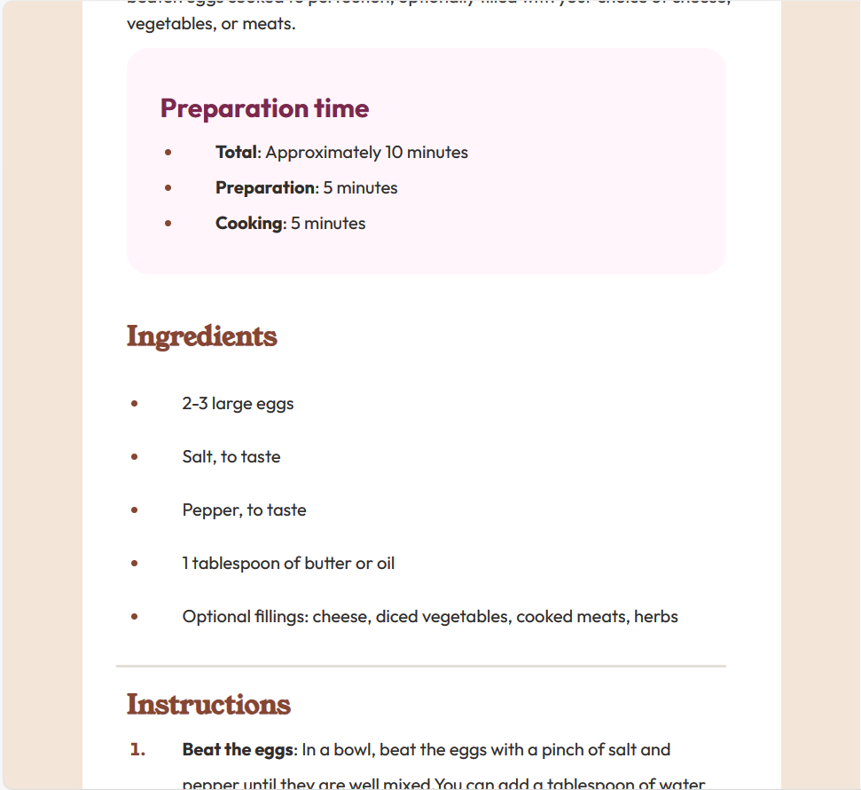
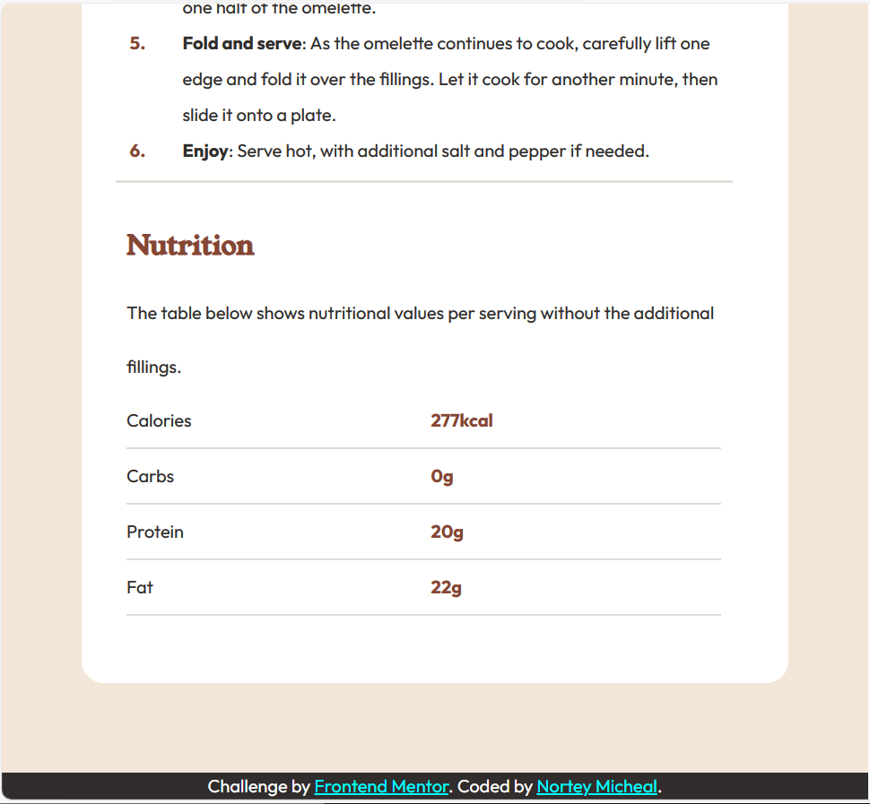
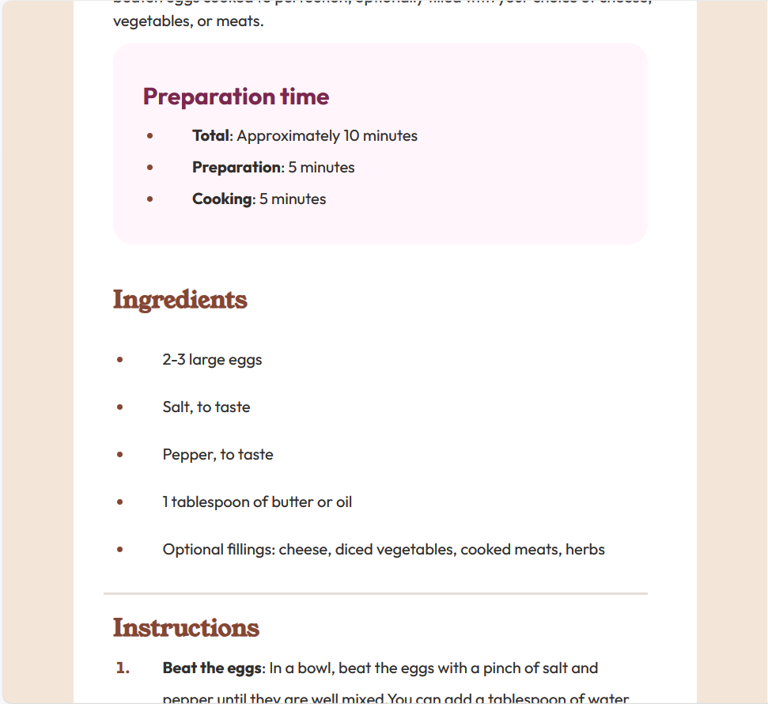
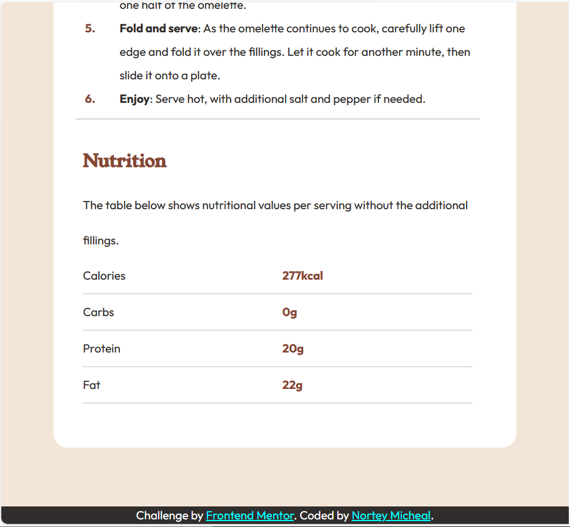

Welcome to my portfolio! As a passionate web developer, I specialize in crafting seamless and dynamic user experiences. Whether you're looking for a sophisticated e-commerce platform, an interactive web application, or a sleek personal website, I have the skills and creativity to bring your vision to life. Let's build something great together.
.
EXPERIENCES
- Version Control (Git): Familiarity with Git for managing code versions and collaborating with other developers.
- HTML and CSS: Proficiency in creating and styling web pages using HTML (Hypertext Markup Language) and CSS (Cascading Style Sheets).
- JavaScript: Understanding of JavaScript for interactive web elements, dynamic content, and client-side scripting.
- Responsive Web Design: Ability to create websites that adapt seamlessly to different screen sizes and devices.
- Testing and Debugging: Competence in identifying and fixing issues in code.
Technical Skills:
Problem-Solving Skills
Teamwork and Collaboration
Self-Learning and Adaptability
Attention to Detail
Communication Skills
PROJECTS

This preview card provides a snapshot of the blog’s main focus, highlighting the importance of HTML and CSS in web development. It also credits the individuals involved in the creation and coding of the content.live page

The webpage presents a simple online version of the classic game Rock, Paper, Scissors. Here’s a brief summary:
- Game Choices: Players can choose between rock, paper, or scissors.
- Rules: The game follows the traditional rules where rock crushes scissors, paper covers rock, and scissors cut paper.
- Scoring: The page keeps track of the user’s score and the number of times they’ve lost.

The website presents a personal profile for Jessica Randall, a front-end developer based in London, United Kingdom. It showcases her professional interests and provides quick access to her social and professional platforms, including GitHub, Frontend Mentor, LinkedIn, Twitter, and Instagram.live page
 



The web page presents a simple omelette recipe that is easy and quick to prepare, suitable for any meal. It details the preparation and cooking time, ingredients, and step-by-step instructions for making a classic omelette. Additionally, it provides optional filling suggestions and nutritional values per serving without fillingslive page